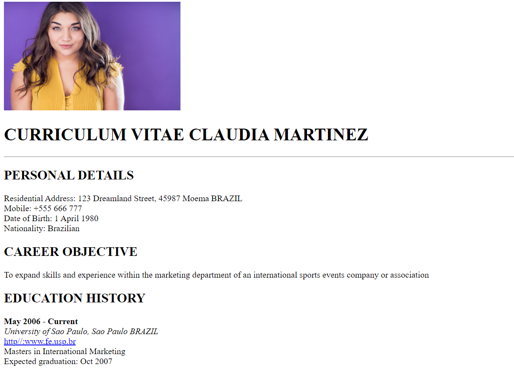
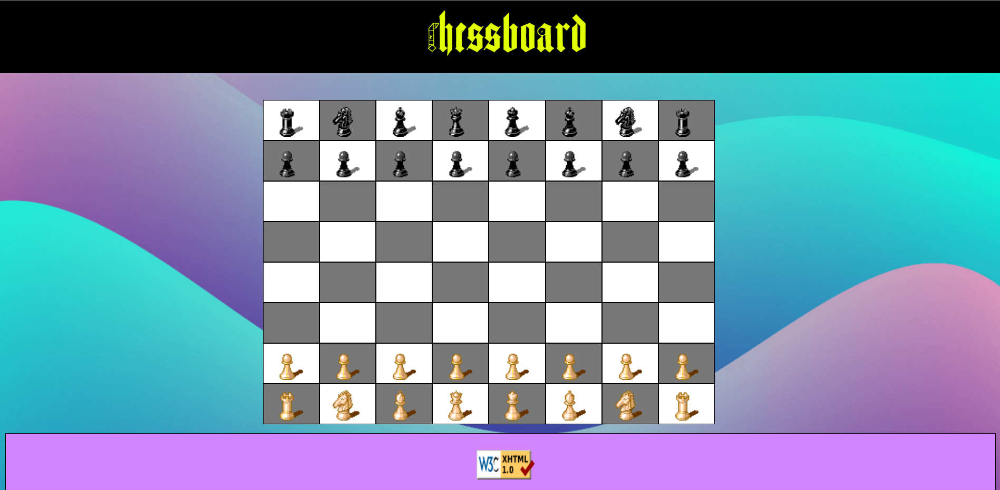

Resume
A webpage built solely utilizing HTML to repurpose resume details into a web-based presentation
Take a look

Chessboard
A webpage built using HTML and CSS in tandem to recreate the classic look and feel ascribed to the game of chess
Take a look